X&Y
These comics are part of the loose TMBG-inspired X&Y Rule the World universe.

A bike accident is a bit like falling in love. (5pg, greyscale.)

Running into friends after college is so awkward. (1pg, B&W.)

Or some other cultural figure... (2.5pg, spot color.)

Nemeses with a crush. (5pg, B&W.)

Mono Puff lyric comic about espionage. (1pg, spot color.)
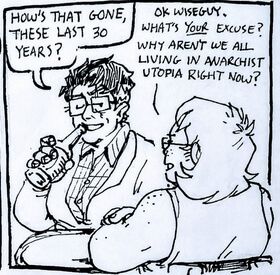
A philosophical debate. OC crossover. (1.5pg, B&W)
Originals
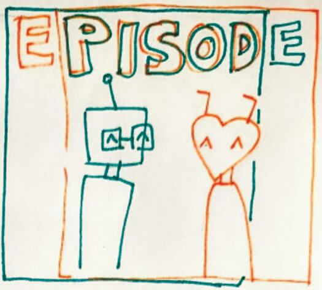
A misunderstanding. For Make A Terrible Comic Day 2024. (1pg, 2-color.)
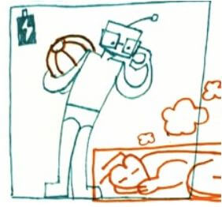
A functional mismatch. For Make A Terrible Comic Day 2025. (1pg, 2-color.)
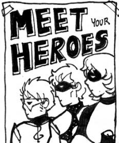
Superpowers and time. OCs c/o quicksilverace. (5pg, greyscale.)
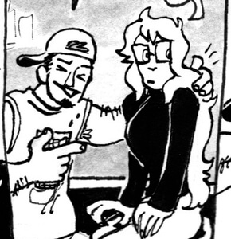
An alien blind date. OC c/o Eddie alltimewhat. (2pg, greyscale.)
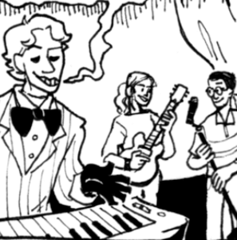
A demon and a band gig. OC c/o Eddie alltimewhat. (2pg, B&W.)
Fancomics
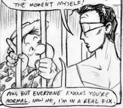
Plastic Man reexamines his priorities as he's caught up in the mid-50s Lavender Scare. (6pg, pencil/typewriter.)
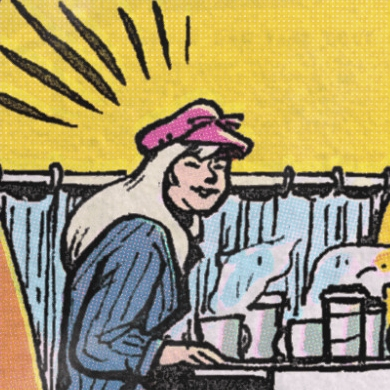
Silver Age Spidey five pastiche. Original fic by brawltogethernow. (3pg, full color.)
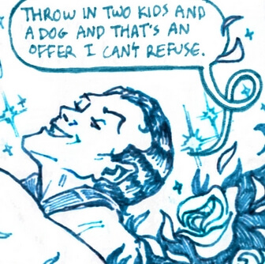
Spider-Man parody comic. Harry Osborn lets his imagination wander. (2pg, monochrome.)
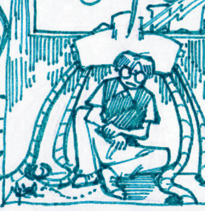
How one Oliver Octavius became Spider-Man. (2pg, monochrome.)
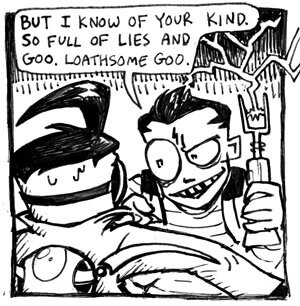
Invader Zim AU fancomic. (4pg, B&W)
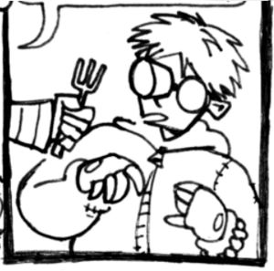
Invader Zim AU fancomic. (4pg, B&W)
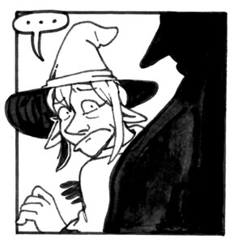
Adventure Zone commission for Amber M. (8pg, B&W.)
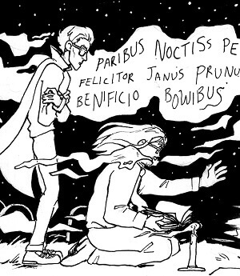
NKoTR fancomic about casual reanimation. (5pg, done in lieu of Inktober 2017.)
Older Works...
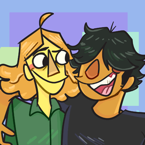
Webcomic about muppets at tech school (2018).
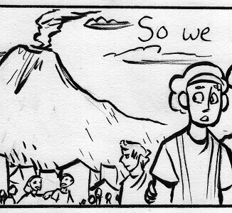
3 pages. Drawn for Latin class, adapted from Pliny the Younger (2016).
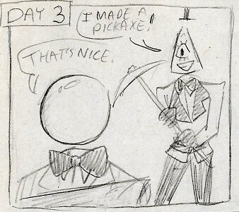
10 pages, unfinished, pencil. Cowritten by Grace "ShadowOctopus" (2014).